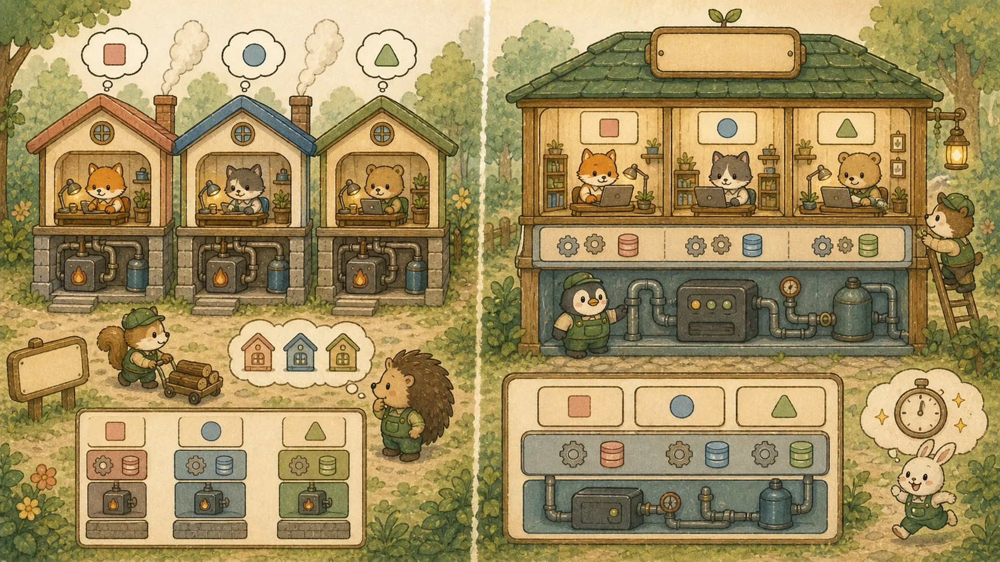

Chapter 08: DevOps · Docker · GitHub Actions · AWS · Spring Modulith · MSA
인프라 기초(셸·네트워킹·컨테이너 vs VM·이미지 vs 컨테이너) 토대 위에 Docker/Docker-Compose, Multi-stage Build, GitHub Actions CI/CD, AWS VPC, Nginx 무중단 배포, 모놀리식→Spring Modulith→MSA 진화와 Saga·Circuit Breaker까지 — 인프라 기초부터 12개 섹션으로 총망라합니다.
🧱 A. 인프라 기초 + Docker & CI/CD
1. 인프라 기초 — 셸·네트워킹·컨테이너 vs VM
Docker·AWS·Nginx를 배우기 전에 그 토대가 되는 운영체제·네트워킹 개념이 필요합니다. "포트가 뭔지" 모르면 8080:8080 매핑이 외계어처럼 보입니다.
① Linux / 셸 기초
컨테이너는 리눅스 위에서 돕니다. Dockerfile의 명령들도 결국 셸 명령입니다. 최소한 이 정도는 손에 익혀야 합니다.
pwd # 현재 디렉토리 경로
ls -al # 파일 목록 (숨김 포함, 상세)
cd /opt/app # 디렉토리 이동
cat app.log # 파일 내용 출력
export PORT=8080 # 환경 변수 설정 (Docker/배포에서 자주 사용)
echo $PORT # 환경 변수 읽기
chmod +x run.sh # 실행 권한 부여
ps aux | grep java # 실행 중인 자바 프로세스 검색
kill -9 1234 # 프로세스 종료 (PID 1234)② 네트워킹 — IP · 포트 · localhost
- IP 주소: 네트워크상 컴퓨터의 주소 (예: 192.168.0.10).
localhost= 127.0.0.1 = 내 컴퓨터 자신. - 포트(Port): 한 컴퓨터 안에서 프로그램을 구분하는 번호. 한 건물(IP)의 호실 번호. 백엔드 8080, 프론트 3000, PostgreSQL 5432, Redis 6379.
- 포트 매핑
8080:8080:호스트포트:컨테이너포트. 컨테이너는 격리돼 있어, 호스트의 8080 요청을 컨테이너 내부 8080으로 연결해야 외부에서 접근 가능. 그래서 한 호스트 포트는 한 컨테이너만 점유 가능. - DNS: 도메인(shop.com)을 IP로 변환하는 전화번호부.
③ 컨테이너 vs 가상 머신(VM)
💡 비유로 이해하기: 아파트 vs 단독주택 단지
VM은 각자 완전한 단독주택 — 집마다 전기·수도·보일러(게스트 OS 전체)를 따로 갖춰 무겁고 느립니다(부팅 수십 초).
컨테이너는 아파트 — 건물의 기반 시설(호스트 OS 커널)을 공유하고 각 세대는 내부 인테리어(앱+라이브러리)만 가집니다. 가벼워서 수백 MB·수 초 내 기동. 그래서 마이크로서비스에 적합합니다.

flowchart TB
subgraph VM["🖥️ 가상 머신 (무거움)"]
direction TB
VApp1["앱 A"] --> GOS1["게스트 OS"]
VApp2["앱 B"] --> GOS2["게스트 OS"]
GOS1 --> HV["하이퍼바이저"]
GOS2 --> HV
HV --> HOS1["호스트 OS"]
end
subgraph CT["📦 컨테이너 (가벼움)"]
direction TB
CApp1["앱 A + 라이브러리"] --> DE["Docker 엔진"]
CApp2["앱 B + 라이브러리"] --> DE
DE --> HOS2["호스트 OS 커널 (공유)"]
end
④ 이미지 vs 컨테이너
이미지(Image)는 "붕어빵 틀" — 앱+라이브러리+실행환경을 묶은 불변 템플릿(예: 빌드된 .jar를 담은 이미지). 컨테이너(Container)는 "구워진 붕어빵" — 이미지를 실행한 살아있는 인스턴스. 한 이미지로 여러 컨테이너를 띄울 수 있습니다. docker build로 이미지를 만들고 docker run으로 컨테이너를 띄웁니다.
⑤ 리버스 프록시 / 로드밸런싱 개념
리버스 프록시는 외부 요청을 먼저 받아 뒤의 실제 서버로 전달하는 "안내 데스크"(Nginx, AWS ALB). 로드밸런싱은 그 요청을 여러 서버에 고르게 분배해 한 서버 과부하를 막는 것. SSL 종료, 정적 파일 캐싱도 여기서 합니다. 다음 Nginx·AWS 섹션의 토대입니다.
⛓️ 포트/네트워킹 → AWS VPC 섹션, 리버스 프록시 → Nginx 섹션, 컨테이너 → 다음 Docker Compose 섹션.
2. Docker & Docker Compose — 환경의 파편화 종식
로컬에서는 잘 돌던 코드가 서버에 올리면 뻗는 이유는 운영체제와 버전 의존성이 다르기 때문입니다. Docker는 OS부터 라이브러리, 코드까지 하나로 묶어 어디서든 똑같이 실행되게 만듭니다.
💡 비유로 이해하기: 규격화된 해상 컨테이너
과거에는 배에 짐을 실을 때 모양이 제각각이라 테트리스를 해야 했습니다. Docker 컨테이너는 내용물이 무엇이든(Java, Node, DB) 모양과 크기를 똑같은 철제 박스(규격)로 통일하여, 항구(서버)가 박스 내용물에 신경 쓰지 않고 빠르게 싣고 내릴 수 있게 한 혁신입니다.
# 백엔드, 프론트엔드, DB, Redis를 한 번의 명령어(docker-compose up -d)로 동시 구동!
version: '3.8'
services:
db:
image: postgres:15-alpine
environment:
POSTGRES_USER: shop_user
POSTGRES_PASSWORD: shop_pass
POSTGRES_DB: shop_db
ports:
- "5432:5432"
redis:
image: redis:7-alpine
ports:
- "6379:6379"
backend:
build: ./backend # 백엔드 디렉토리의 Dockerfile로 빌드
ports:
- "8080:8080"
depends_on: # 기동 '순서'만 보장 — DB '준비완료(readiness)'까지 기다리진 않음(아래 주의)
- db
- redis
environment:
SPRING_DATASOURCE_URL: jdbc:postgresql://db:5432/shop_db # 컨테이너 이름(db)으로 통신!3. 초경량 패키징 혁신: Docker Multi-stage Build
단일 빌드를 쓰면 컴파일용 JDK와 Gradle 등 무거운 도구가 배포 이미지에 남습니다(약 800MB). 다단계 빌드를 사용하면 용량을 10분의 1로 압축(약 100~200MB)할 수 있습니다.
# 1단계: 빌더(공장) 스테이지 - 소스 컴파일 및 Jar 생성
FROM gradle:8.5-jdk17 AS builder
WORKDIR /app
COPY . .
RUN ./gradlew bootJar --no-daemon
# 2단계: 런타임 스테이지 - 가벼운 JRE만 포함된 빈 상자
FROM eclipse-temurin:17-jre-jammy
WORKDIR /opt/shop
# 1단계(builder)에서 깎아낸 최종 Jar 파일 하나만 쏙 빼오기!
# (수백MB의 Gradle 찌꺼기는 1단계와 함께 소멸됨)
COPY --from=builder /app/build/libs/*.jar shop-app.jar
EXPOSE 8080
ENTRYPOINT ["java", "-jar", "shop-app.jar"]4. GitHub Actions — CI/CD 자동화 파이프라인
개발자가 코드를 Push할 때마다 수동으로 테스트, 빌드, 서버 접속, 배포를 하는 것은 고통입니다. CI/CD(지속적 통합/배포)는 이 과정을 100% 자동화하는 로봇입니다.
name: Java CI/CD Pipeline
on:
push:
branches: [ "main" ] # main 브랜치에 코드가 push될 때 발동!
jobs:
build-and-deploy:
runs-on: ubuntu-latest
steps:
- name: 소스코드 체크아웃 (가져오기)
uses: actions/checkout@v3
- name: JDK 17 세팅
uses: actions/setup-java@v3
with:
java-version: '17'
distribution: 'temurin'
- name: 테스트 및 빌드 (CI)
run: ./gradlew build
- name: Docker 이미지 빌드 및 DockerHub 푸시 (CD 준비)
run: |
docker build -t myname/shop-api:latest .
docker login -u ${{ secrets.DOCKER_USER }} -p ${{ secrets.DOCKER_PASS }}
docker push myname/shop-api:latest
- name: AWS EC2 서버에 배포 명령 전송 (CD)
uses: appleboy/ssh-action@master
with:
host: ${{ secrets.EC2_HOST }}
username: ubuntu
key: ${{ secrets.EC2_SSH_KEY }}
script: |
docker pull myname/shop-api:latest
docker stop api-server || true
docker run -d --name api-server -p 8080:8080 myname/shop-api:latest🚢 [실무 보강 박스] Kubernetes 기초 — 컨테이너 오케스트레이션
Docker로 컨테이너 하나를 잘 만들었습니다(섹션 2~3). 그런데 수십~수백 개를 누가 배치하고, 죽으면 되살리고, 무중단으로 교체할까요? 그 일을 자동화하는 것이 Kubernetes(쿠버네티스, k8s)입니다. 중·대형사 공고의 단골 우대사항이기도 합니다.
💡 비유로 이해하기: 항만 관제탑
Docker가 규격 컨테이너(섹션 2 비유)라면, Kubernetes는 그 컨테이너들을 어느 배·어느 칸에 실을지 정하고, 떨어진 컨테이너를 다시 올리고, 새 컨테이너로 무중단 교체하는 항만 관제탑입니다. 우리는 "컨테이너 3개를 항상 띄워라"라고 원하는 상태(desired state)만 선언하고, 관제탑이 현재 상태를 거기에 맞춥니다.
① 핵심 오브젝트 — 아래로 갈수록 상위 추상:
② 자동 복구 & 무중단 배포 — k8s를 쓰는 진짜 이유:
- 자가 치유(self-healing): Pod가 죽으면 Deployment가 "replicas=3" 상태를 맞추려 자동으로 새 Pod를 생성합니다.
- 헬스체크 2종: livenessProbe(죽었나? → 컨테이너 재시작) vs readinessProbe(트래픽 받을 준비됐나? → 안 되면 Service 라우팅에서 제외). 둘을 구분 못 하면 면접 감점.
- 롤링 업데이트/롤백: 새 버전 Pod로 점진 교체 → 무중단(섹션 7 Blue/Green과 같은 목표). 문제 시
kubectl rollout undo로 즉시 롤백.
apiVersion: apps/v1
kind: Deployment
metadata:
name: shop-api
spec:
replicas: 3 # 항상 3개 유지 → 하나 죽으면 자동 재생성(자가 치유)
selector:
matchLabels: { app: shop-api }
template:
metadata:
labels: { app: shop-api }
spec:
containers:
- name: shop-api
image: myname/shop-api:latest # ← 섹션 2~3에서 만든 Docker 이미지
ports: [{ containerPort: 8080 }]
readinessProbe: # 준비 안 되면 Service에서 트래픽 제외 (actuator 의존성 + health 엔드포인트 노출 필요)
httpGet: { path: /actuator/health/readiness, port: 8080 }
livenessProbe: # 죽으면 컨테이너 재시작
httpGet: { path: /actuator/health/liveness, port: 8080 }
# 롤백 한 줄: kubectl rollout undo deployment/shop-api③ ConfigMap vs Secret — 둘 다 설정을 이미지 밖으로 빼지만, Secret은 민감정보(비밀번호·토큰)용입니다. 주의: Secret의 기본값은 암호화가 아니라 Base64 인코딩일 뿐이라(누구나 디코딩) — etcd 저장 암호화, RBAC 접근 제한, 외부 비밀관리(Vault 등)를 함께 써야 진짜 안전합니다. (JWT Payload가 인코딩일 뿐인 것과 같은 함정 — Ch4 JWT.)
로컬 실습: 클라우드 없이도 kind(Docker 안에 k8s)나 minikube로 단일 노드 클러스터를 띄워 kubectl apply -f deployment.yaml로 바로 연습할 수 있습니다.
💡 면접 단골 질문
- "컨테이너 하나가 죽으면 어떻게 자동 복구되나요?" → Deployment가 원하는 상태(replicas)를 유지하려 죽은 Pod를 자동 재생성합니다(자가 치유). livenessProbe 실패 시 재시작도 트리거됩니다.
- "무중단 배포를 k8s로 어떻게?" → Deployment의 롤링 업데이트로 새 버전 Pod를 점진 교체하고, readinessProbe로 "준비된 Pod에만" 트래픽을 보냅니다. 문제 시
rollout undo로 롤백. - "ConfigMap과 Secret 차이/주의점은?" → 둘 다 설정 외부화지만 Secret은 민감정보용이며 기본은 Base64일 뿐 암호화가 아니다(etcd 암호화·RBAC 필요).
⛓️ Docker 이미지는 섹션 2~3, 무중단 배포 사상은 섹션 7 Blue/Green, 관리형 k8s(EKS)는 아래 AWS 섹션과 이어집니다. 헬스체크 엔드포인트는 부록 G 관측성(Actuator)과 연결됩니다.
☁️ B. AWS 클라우드 인프라 아키텍처
5. 실무 필수 AWS 핵심 서비스 3인방
💻 EC2 (가상 서버)
클라우드에 빌리는 컴퓨터. Spring Boot나 Next.js 서버를 직접 띄우는 핵심 두뇌 엔진입니다. 트래픽 폭주 시 Auto Scaling으로 대수를 늘릴 수 있습니다.
📦 S3 (객체 저장소)
무제한 용량의 스토리지. 상품 이미지 업로드, 프론트엔드 정적 파일(HTML/JS) 호스팅에 사용됩니다. EC2 하드디스크에 이미지를 저장하면 서버 확장 시 이미지가 깨지므로 반드시 S3를 씁니다.
🗄️ RDS (관계형 DB)
백업, 패치, 다중화(이중화)를 AWS가 알아서 관리해주는 관리형 데이터베이스. EC2에 직접 PostgreSQL을 까는 것보다 장애 복원력이 압도적입니다.
6. AWS 가상 네트워크 (VPC) 인프라 아키텍처
인터넷의 모든 요청을 한 번에 DB까지 들여보내는 것은 보안상 자살행위입니다. Public 서브넷(DMZ)과 Private 서브넷(내부 격리망)으로 방어선을 구축합니다.
7. Nginx 리버스 프록시와 무중단 배포 (Blue/Green)
단일 서버 배포 시 재시작하는 몇 초 동안 서비스가 끊깁니다. 무중단 배포는 새 버전을 미리 켜두고 트래픽만 순식간에 전환하여 사용자가 배포를 느끼지 못하게 합니다.
현재 서비스(Blue 포트: 8080) ← Nginx 라우팅 중↓
새 버전 배포(Green 포트: 8081) 백그라운드에서 구동 완료↓
Nginx 방향 전환(Reload) 8080 → 8081로 0.1초 만에 전환! (무중단)
server {
listen 80;
server_name api.antigravity.com;
location / {
# 외부 클라이언트는 80포트(Nginx)로 들어오지만, Nginx가 내부 8080(Spring)으로 토스(Reverse Proxy)
proxy_pass http://localhost:8080;
# 클라이언트의 진짜 IP를 Spring에 전달
proxy_set_header X-Real-IP $remote_addr;
proxy_set_header X-Forwarded-For $proxy_add_x_forwarded_for;
}
}🏗️ [실무 보강 박스] Terraform — 코드로 만드는 인프라(IaC)
위에서 AWS 콘솔을 클릭해 EC2·VPC를 만들었습니다. 그런데 "누가, 언제, 무엇을 바꿨는지" 추적도 안 되고, 같은 환경을 다시 만들기도 어렵습니다. IaC(Infrastructure as Code)는 인프라를 코드로 선언해 버전 관리·코드 리뷰·재현을 가능하게 합니다. 대표 도구가 Terraform이며, 인프라 공고의 동반 키워드입니다.
💡 비유로 이해하기: 레시피 vs 즉흥 요리
콘솔 클릭은 즉흥 요리라 똑같이 다시 만들기 어렵습니다. Terraform 코드는 레시피여서, 같은 코드로 개발·운영 환경에 동일한 인프라를 몇 번이든 재현할 수 있습니다.
핵심 개념 4가지: provider(AWS 등 대상 플랫폼) · resource(만들 자원: EC2·VPC 등) · state(현재 인프라 상태를 기록한 진실의 원천) · plan→apply(변경 미리보기 후 적용).
# main.tf
provider "aws" {
region = "ap-northeast-2" # 서울 리전
}
resource "aws_instance" "shop_api" { # 만들 자원: EC2 인스턴스
ami = "ami-xxxxxxxx"
instance_type = "t3.micro"
tags = { Name = "shop-api" }
}
# 워크플로우:
# terraform plan → 무엇이 생성/변경/삭제될지 '미리보기'(안전장치)
# terraform apply → 실제 적용 후 현재 상태를 state 파일에 기록왜 좋은가: 같은 코드를 여러 번 apply해도 결과가 같고(멱등성 — 부록 E와 같은 사상), 인프라 변경을 PR로 리뷰하며, dev/prod를 동일하게 재현합니다. state 파일엔 민감정보가 담길 수 있어 원격 백엔드(S3 등)에 두고 잠금(lock)으로 동시 변경을 막습니다.
💡 면접 한 줄: "plan과 apply의 차이?" → plan은 변경 사항을 미리 보여주는 예행연습, apply는 실제 반영. "state 파일이 왜 중요한가?" → Terraform이 "현재 무엇이 떠 있는지"를 state로 파악해 다음 변경을 계산하기 때문 — 그래서 원격 저장·락·민감정보 관리가 중요합니다.
⛓️ Terraform으로 위 AWS 자원과 EKS(관리형 Kubernetes)를 코드로 프로비저닝하고, 그 위에 앞 보강 박스의 Kubernetes 매니페스트를 배포하는 것이 전형적인 운영 파이프라인입니다.
🧩 C. Spring Modulith → 대규모 MSA 아키텍처
8. Monolithic에서 MSA(Microservices)로의 진화
코드가 거대해지면 로그인 기능 하나를 수정해도 쇼핑몰 전체를 재배포해야 합니다. 이를 기능(도메인)별로 쪼갠 독립된 서버들의 집합이 MSA입니다.
9. Spring Modulith — 모놀리식의 합리적 분리 (MSA 직전 단계)
Monolithic의 유지보수 지옥과 MSA의 분산 복잡도 사이엔 중간 길이 있습니다. Spring Modulith는 하나의 배포 단위 안에서도 도메인을 모듈 단위로 강하게 분리하여, 같은 JVM에서 모듈 간 경계를 컴파일 시점에 강제하는 도구입니다.
💡 비유로 이해하기: 사무실 vs 빌딩 vs 분리 건물
모놀리식 = 한 사무실에 모든 부서가 같이 일함 (커지면 시끄럽고 혼란).
Spring Modulith = 같은 빌딩 안에서 부서별로 층을 나눔. 같은 빌딩이라 통신은 빠르지만, 다른 층에 무단 침입은 불가.
MSA = 부서별로 독립 건물에 분리. 완전 자율이지만 통신은 항상 외부 우편(네트워크).
언제 Spring Modulith를 선택하나:
- 모놀리식이 커져 도메인 경계가 흐려지기 시작했지만 아직 MSA의 운영 부담은 부담스러울 때
- 장차 MSA로 갈 가능성이 있어 모듈 분리 연습이 필요할 때
- 작은 팀에서 분산 트랜잭션, Service Discovery, 분산 추적 같은 비용을 감당하기 어려울 때
// build.gradle
dependencies {
implementation 'org.springframework.modulith:spring-modulith-starter-core'
testImplementation 'org.springframework.modulith:spring-modulith-starter-test'
}
// 패키지 구조 — 각 최상위 패키지가 자동으로 "ApplicationModule"
com.antigravity.shop
├── product // ApplicationModule: product
│ ├── Product.java (package-private)
│ ├── ProductService.java (package-private)
│ └── api
│ └── ProductExternalApi.java (public, 다른 모듈에 노출)
├── order // ApplicationModule: order
│ └── OrderService.java
└── ShopApplication.java
// ❗ 핵심 규칙: 모듈 외부에서는 api 하위 public 인터페이스만 접근 가능
// 다른 모듈이 product.Product 직접 import 하면 컴파일 에러!// 테스트 코드 한 줄로 모든 모듈 의존성 규칙 검증
class ModularityTest {
@Test
void verifiesModularStructure() {
ApplicationModules.of(ShopApplication.class).verify();
// 위반 시 즉시 빌드 실패. 예: product가 order의 내부 클래스를 import하면 에러.
}
@Test
void documentsModuleArchitecture() {
new Documenter(ApplicationModules.of(ShopApplication.class))
.writeDocumentation();
// build/spring-modulith/ 에 PlantUML 다이어그램 자동 생성
}
}// 1. order 모듈이 이벤트 발행 (다른 모듈을 직접 import하지 않음!)
@Service
@RequiredArgsConstructor
public class OrderService {
private final ApplicationEventPublisher events;
@Transactional
public Order placeOrder(OrderRequest req) {
Order order = orderRepo.save(Order.from(req));
events.publishEvent(new OrderPlacedEvent(order.getId(), order.getUserId()));
return order;
}
}
// 2. notification 모듈은 같은 이벤트를 비동기 구독
@Component
public class OrderEventListener {
@ApplicationModuleListener // 비동기 + 트랜잭션 안전 (커밋 후 실행)
public void on(OrderPlacedEvent event) {
// 주문 알림 전송. 실패해도 주문 자체엔 영향 없음.
notificationService.sendOrderConfirmation(event.userId());
}
}Spring Modulith의 진짜 가치: MSA로 옮길 결심이 섰을 때, 이미 모듈로 분리된 코드는 각 모듈을 그대로 마이크로서비스로 추출하면 됩니다. ApplicationEvent로 통신하던 부분만 메시지 큐(Kafka, RabbitMQ)로 갈아끼우면 됩니다. "분리 연습"을 하면서 정작 분산 운영의 비용은 안 무는 균형점입니다.
⛓️ Modulith에서 분리된 모듈을 멀티 도구 호출로 LLM에게 노출하는 Agentic RAG 패턴은 부록 D — Agentic RAG에서 다룹니다.
10. API Gateway 패턴 — MSA의 단일 진입점
클라이언트가 주문/결제/회원 30개의 마이크로서비스 주소를 모두 아는 것은 불가능합니다. API Gateway를 둬서 트래픽을 교통 정리합니다.
💡 비유로 이해하기: 대형 병원의 안내 데스크
환자가 정형외과, 내과, 안과 위치를 직접 찾아 헤매지 않고, 1층 안내 데스크(API Gateway)에 접수하면 데스크가 알아서 "이 환자는 내과(주문 서버)로 가세요" 하고 라우팅해주는 역할입니다. 여기서 인증 검사나 트래픽 제한도 공통으로 처리합니다.
11. Saga Pattern — 분산 환경의 트랜잭션 관리
MSA는 주문 DB와 결제 DB가 물리적으로 다릅니다. 기존 @Transactional 롤백이 안 통하므로, 실패 시 보상 트랜잭션(역방향 복구)을 직접 구현하는 것이 Saga입니다.
⚠️ 아래 예시는 메시지 큐가 보상을 트리거하는 코레오그래피(Choreography) 방식입니다. 단계가 많아 흐름이 복잡해지면, 중앙 조율자가 순서를 지휘하는 오케스트레이션(Orchestration, 예: Temporal·Axon Saga)이 추적·디버깅에 더 유리합니다.
🏗️ 사가 패턴의 복구 시나리오
① (주문 서버) 주문 생성 완료!
② (재고 서버) 재고 차감 완료!
③ (결제 서버) 잔액 부족 예외 발생! 💥
보상 트랜잭션 발동: 결제 실패 이벤트를 감지한 메시지 큐(Kafka/RabbitMQ)가 재고 서버에 "재고 +1 복구해!" API를 날리고, 이어서 주문 서버에 "주문 상태 취소로 변경해!" API를 순차적으로 날려 데이터 정합성을 맞춥니다.
12. Circuit Breaker (서킷 브레이커) & 모니터링
결제 서버가 죽었는데 주문 서버가 계속 요청을 보내면 주문 서버마저 스레드가 고갈되어 동반 자살(Cascading Failure)합니다. 서킷 브레이커로 회로를 차단합니다.
🛑 서킷 브레이커 (Resilience4j)
결제 API 호출 실패율이 50%를 넘으면 '차단(Open)' 상태로 변하여 타임아웃을 기다리지 않고 즉시 에러를 반환합니다. 장애 파급을 막고 예비 로직(Fallback)을 실행합니다.
📈 Prometheus & Grafana
수십 개의 MSA 서버 로그를 개별로 보는 건 불가능합니다. Prometheus가 서버 CPU/메모리/트래픽 수치를 긁어오고, Grafana가 이를 화려한 대시보드 그래프로 시각화합니다.
📚 08챕터 헷갈리는 용어 사전
🛠️ 직접 만들어보기 — "이걸로 만들 수 있나?" 체크포인트
읽기만으로는 복귀가 안 됩니다. 앞 챕터에서 만든 앱을 실제로 컨테이너화하고 자동 배포 파이프라인까지 연결하세요.
- Spring + Next.js 각각 멀티스테이지
Dockerfile작성 (이미지 경량화 확인) docker-compose.yml로 backend + frontend + PostgreSQL + Redis를docker compose up한 번에 기동- 포트 매핑·컨테이너 간 통신(서비스 이름으로 접근) 직접 확인
- GitHub Actions 워크플로 1개: 빌드 → 테스트 → (가능하면) 이미지 push
- (선택) Spring Modulith
ApplicationModules.verify()테스트를 CI에 추가